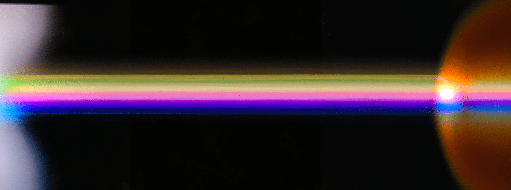

<div class="section">
    <div class="image-container">
        <div class="image-container-inner"></div>
        
    </div>
    <button id='restart'>Restart</button>
</div>
<script src="https://cdnjs.cloudflare.com/ajax/libs/gsap/3.7.1/gsap.min.js"></script>
<script>
    const tl = new TimelineMax()

    const imgContainer = document.getElementsByClassName('image-container');
    const imgInnerContainer = document.getElementsByClassName('image-container-inner');
    const img = document.getElementById('image');
    const restart = document.getElementById('restart');

    document.addEventListener('DOMContentLoaded', () => {

        tl
            .from(imgContainer, 1.5, {
                height: 0,
                opacity: 0,
                ease: Expo.easeInOut
            })
            .from(img, 1.35, {
                opacity: 0,
                scale: 1.8,
                ease: Expo.easeOut
            }, 1.45)
            .to(imgInnerContainer, 1.25, {
                height: 0,
                ease: Expo.easeInOut
            }, 1.25)

        restart.addEventListener("click", function () {
            tl.restart();
        });

    })
</script>
<style>
    .section {
        height: 100vh;
        width: 100vw;
        display: flex;
        align-items: center;
        justify-content: center;
    }

    .image-container {
        width: 25%;
        height: 90%;
        overflow: hidden;
        position: relative;
    }

    .image-container-inner {
        height: 100%;
        width: 100%;
        background: pink;
        z-index: 2;
        position: absolute;
    }

    .image-container>img {
    position: absolute;
    top: 0;
    height: 100%;
    width: auto;
    left: -30%;
}


    #restart {
        position: absolute;
        left: 5%;
        bottom: 10%;
    }
</style>


<!--<div class="outer" id="outer">
    <div class="inner" id="inner">
        
    </div>
</div>
<script src="https://cdnjs.cloudflare.com/ajax/libs/animejs/3.2.1/anime.min.js"></script>

<style>


    .outer {
        position: relative;
        overflow: hidden;
    }

    .outer:before {
        display: block;
        content: "";
        width: 100%;
        padding-top: 149.9245852187%;
    }

    .outer>.inner {
        overflow: hidden;
        position: absolute;
        top: 0;
        right: 0;
        bottom: 0;
        left: 0;
    }

    .outer>.inner img {
        object-fit: cover;
        width: 100%;
        height: 100%;
        transform: scale(1);
        overflow: hidden;
    }
</style>
<script>
    anime({
        targets: '.outer',
        translateY: '-100%',
        direction: 'reverse',
        duration: 3000,
        easing: 'easeInOutCubic',
    })

    anime({
        targets: '.inner',
        translateY: '100%',
        direction: 'reverse',
        duration: 3000,
        easing: 'easeInOutCubic',
    })

    anime({
        targets: '.image',
        scale: 2,
        easing: 'easeInOutQuad',
        direction: 'reverse',
        duration: 3500,
    })
</script>-->